O que é BI e seus primeiros cliques no Power BI
Nesta aula você entende o que é Business Intelligence, por que as empresas investem nisso, instala o Power BI Desktop, conhece cada área da tela e faz a sua primeira importação de dados do Excel.
- Nível
- Básico
- Duração
- 2 horas
- Você vai precisar
- Power BI Desktop (gratuito, Windows)
- Conteúdos
- Business IntelligenceBig DataData ScienceInstalaçãoInterfaceImportar ExcelTabela x Intervalo
01O que é Business Intelligence
Antes de abrir qualquer programa, você precisa entender o problema que ele resolve.
Business Intelligence (BI) é o conjunto de técnicas e ferramentas que transforma dados em informação útil para tomar decisões. Com BI você junta dados de várias fontes, cria relatórios e painéis e acompanha indicadores (os famosos KPIs) para enxergar tendências e oportunidades.
Normalmente o BI olha para o passado para entender o que aconteceu. São perguntas como:
- Qual foi o volume de vendas por estado?
- Qual produto vendeu mais em cada dia da semana?
- Quais lojas tiveram o melhor desempenho?
Onde o BI aparece no dia a dia das empresas
| Área | O que se analisa | Decisão que o BI ajuda a tomar |
|---|---|---|
| Finanças | Receita, despesas, lucro | Onde economizar e onde investir |
| Vendas | Volume, faturamento, margem | Quais produtos e regiões merecem atenção |
| Operações | Tempo de produção, defeitos, disponibilidade | Onde está o gargalo da fábrica |
| RH | Rotatividade, tempo de casa, desempenho | Problemas de clima ou de treinamento |
| Saúde | Histórico, exames, tratamentos | Apoio à decisão clínica e à gestão do hospital |
BI, Big Data e Data Science: qual a diferença?
Big Data é o volume enorme de dados que as empresas geram hoje: transações, redes sociais, sensores, logs de sites. Muitos desses dados são não estruturados (textos, eventos, cliques), e bancos de dados tradicionais não foram feitos para eles. Por isso surgiram os Data Lakes.
Data Science combina matemática, estatística e computação para extrair conhecimento desses dados: prever demanda, segmentar clientes, detectar fraudes com Machine Learning.
O BI usa os dados (inclusive os de Big Data) para mostrar o que aconteceu de forma clara. Quando BI e Data Science se encontram, temos o que o mercado chama de Big Data Analytics.
O que é o Microsoft Power BI
O Power BI é a plataforma de BI da Microsoft. Com ele você:
- Conecta dados de planilhas, bancos, serviços na nuvem e sites;
- Limpa e transforma esses dados no Power Query, sem programar;
- Modela os dados, ligando tabelas e criando cálculos em DAX;
- Visualiza em gráficos de colunas, barras, pizza, linhas, cartões, mapas, tabelas e matrizes que filtram uns aos outros;
- Compartilha no Power BI Service (versão online, com licença).
É a ferramenta de BI mais usada nas empresas brasileiras, o Desktop é gratuito e ela conversa com o Excel, que você já conhece. Em vagas de analista de dados, “Power BI” aparece em quase todas as descrições.
02Instalando o Power BI Desktop
Entre no Centro de Download da Microsoft:
microsoft.com/pt-br/download/details.aspx?id=58494
Confira se o idioma está em Português (Brasil) e clique em Baixar.
Outra opção é instalar pela Microsoft Store (busque “Power BI Desktop”). Pela Store, ele se atualiza sozinho todo mês.
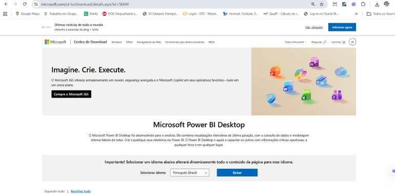
Na lista de arquivos, marque a versão x64 (64 bits), que é a de quase todo computador atual. O arquivo PBIDesktopSetup_x64.exe vai para a pasta Downloads.
Dê dois cliques no instalador e siga o assistente: Avançar → aceite os termos → Instalar → Concluir.
O Power BI Desktop só existe para Windows. Em Mac, use uma máquina virtual com Windows ou o Power BI Service no navegador (que é mais limitado para criar relatórios).
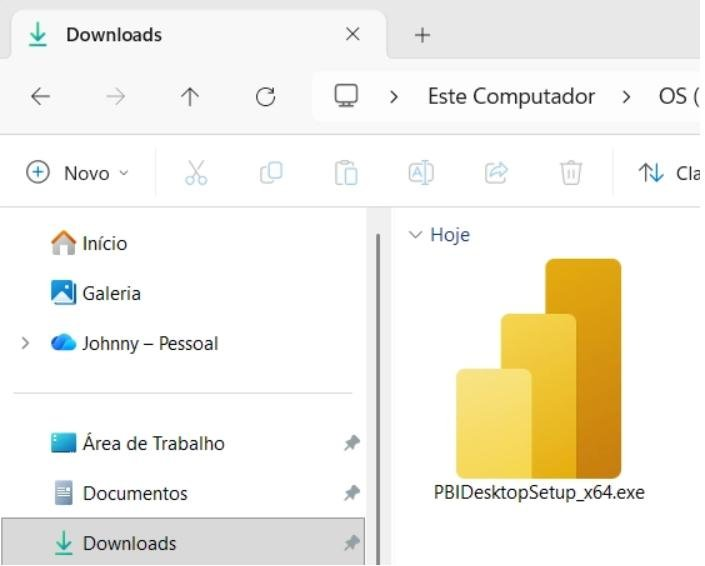
03Conhecendo a janela do Power BI
Saber o nome de cada área faz você seguir qualquer tutorial sem se perder.
Ao abrir o Power BI, aparece a tela inicial. Nela você pode abrir um arquivo recente, começar por uma fonte de dados ou criar um relatório em branco.
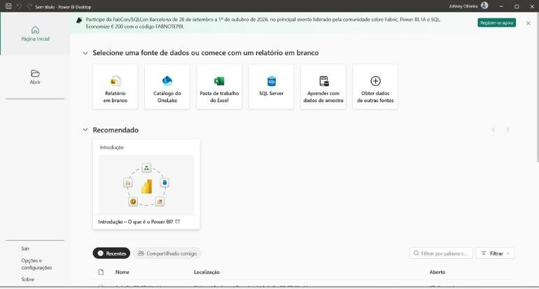
Se você tem conta Microsoft 365 da escola ou do trabalho, clique em Entrar no canto superior direito, digite o e-mail, clique em Continuar e depois informe a senha.
Depois do login, seu nome aparece no canto superior direito.
O login é recomendado se você for publicar relatórios no Power BI Service (aula 13), mas não é obrigatório para criar relatórios no Desktop.
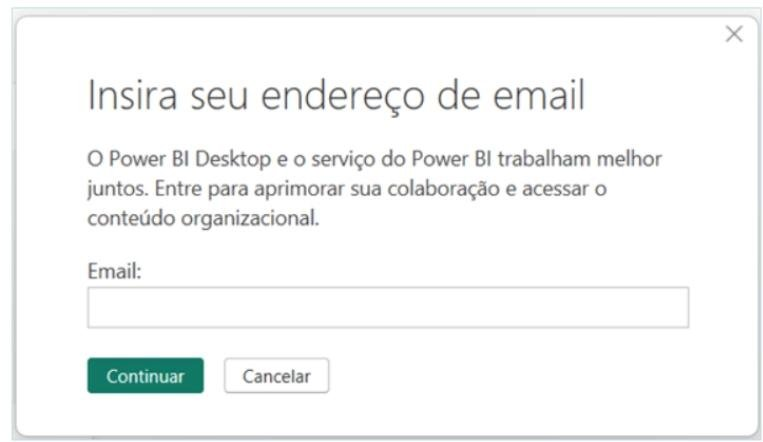
Clique em Relatório em branco. Essa será a área de trabalho de todo o curso.
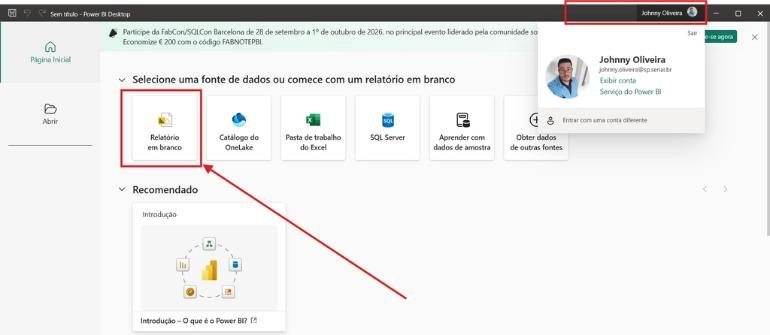
No topo fica a barra de título, com o nome do arquivo (“Sem título” enquanto você não salvar) e, à esquerda, os botões Salvar, Desfazer e Refazer.
Logo abaixo, a faixa de opções, igual à do Excel, com as guias Página Inicial, Inserir, Modelagem, Exibição, Otimizar e Ajuda. Guias extras aparecem quando você seleciona um gráfico (por exemplo Formato).
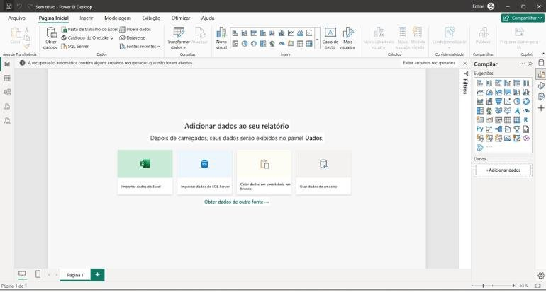
A guia Arquivo não mexe na tela de trabalho: ela reúne as operações com o arquivo, como Salvar como, Exportar (PDF, por exemplo) e Publicar. Para voltar, clique na seta ← no canto superior esquerdo.
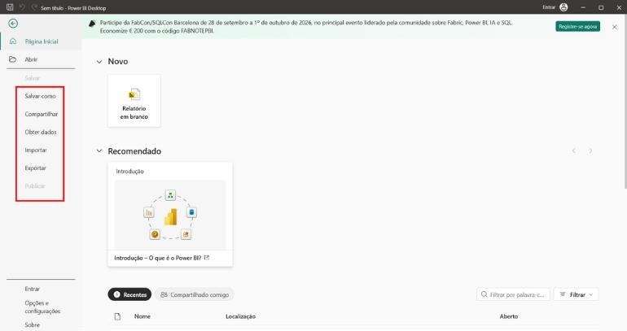
A área cinza central é a tela, também chamada de tapete, página ou painel. É onde você monta os gráficos.
No rodapé ficam as abas das páginas. O botão + cria uma página nova. Um relatório pode ter várias páginas, como um arquivo do Excel tem várias planilhas.
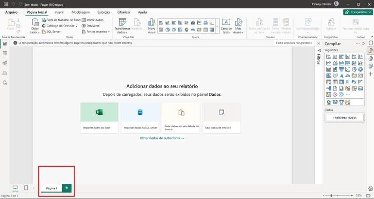
Clique com o botão direito sobre a aba da página para Renomear, Duplicar, Excluir ou Ocultar.
Renomeie a Página 1 para Visão Geral. Dar nome às páginas é o primeiro hábito de um relatório profissional.
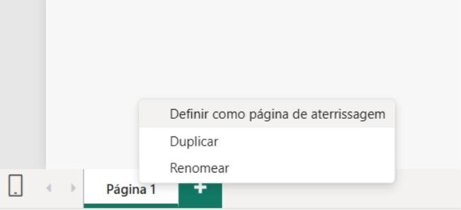
Do lado direito ficam os painéis. Cada um abre ou fecha pelos ícones da coluna mais à direita:
- Filtros: aplica filtros a um visual, à página ou ao relatório inteiro;
- Compilar (antigo Visualizações): onde você escolhe o tipo de gráfico e os campos;
- Formato: cores, títulos, rótulos, bordas do visual selecionado;
- Dados: lista as tabelas e colunas importadas.
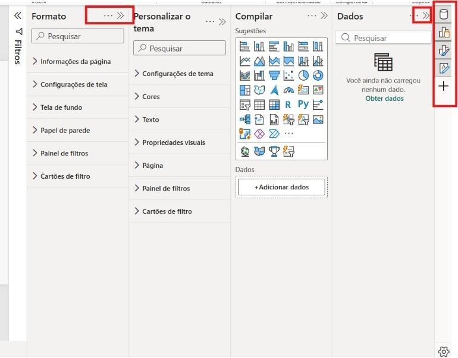
Clique na seta dupla « para expandir o painel Filtros. Você verá as áreas “Filtros nesta página” e “Filtros em todas as páginas”.
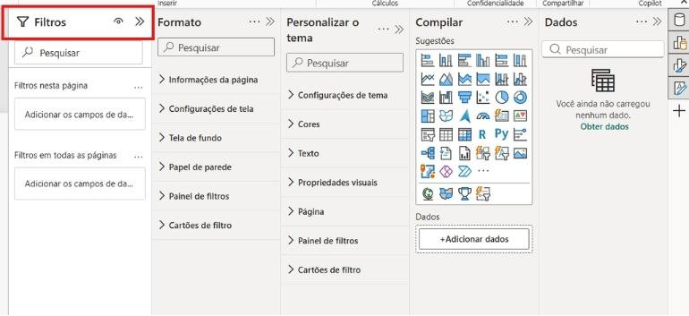
Cada ícone da galeria é um tipo de visual: colunas, barras, linhas, pizza, cartão, tabela, matriz, mapa. Você vai usar esse painel em todas as aulas.
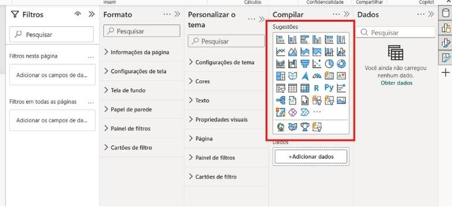
Como ainda não importamos nada, o painel Dados está vazio. Assim que a primeira tabela entrar, ele mostra o nome dela e as colunas.
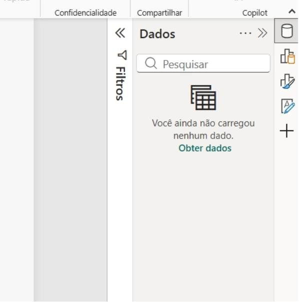
Na barra da esquerda há três ícones principais:
- Relatório: onde você cria os gráficos (é onde passará mais tempo);
- Tabela: mostra as linhas e colunas de cada tabela importada, como uma planilha;
- Modelo: mostra as tabelas como caixinhas e as ligações entre elas (aula 4).
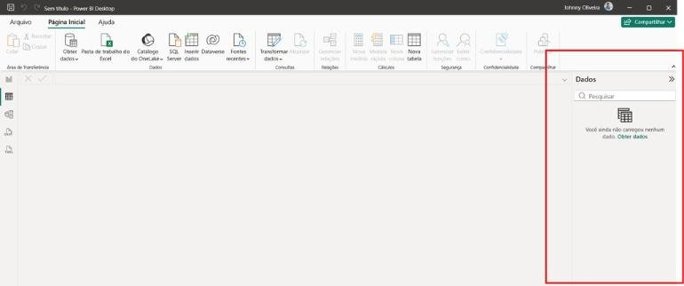
04Importando dados
Para criar qualquer relatório, primeiro você precisa se conectar a uma fonte de dados.
No Power BI, os dados importados ficam em modo de leitura. Para incluir, excluir ou alterar registros, você altera o arquivo de origem (o Excel, por exemplo). Dentro do Power BI você analisa e transforma (com o Power Query), mas não “digita” dados.
Com o relatório vazio, a tela já mostra atalhos para importar do Excel, do SQL Server, colar dados numa tabela em branco ou usar dados de amostra.
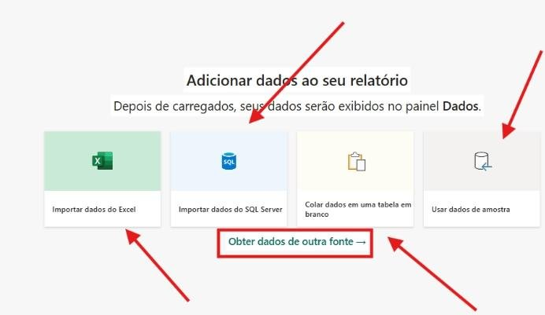
Em Página Inicial, no grupo Dados, há atalhos como Pasta de trabalho do Excel. Clique na setinha de Obter dados para ver mais fontes: Texto/CSV, Web, SQL Server, Consulta em branco…
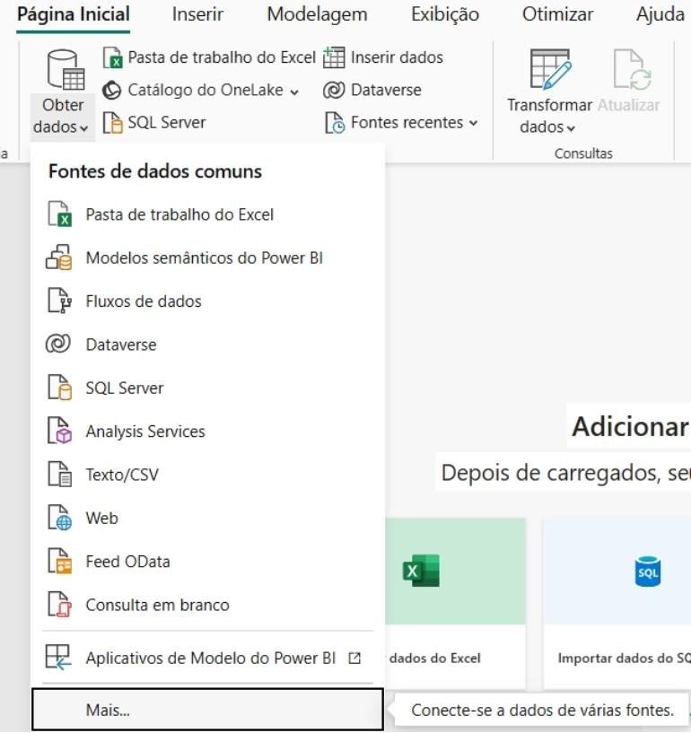
Se a fonte não estiver na lista, clique em Mais…. Abre a janela com todos os conectores (são centenas). Use a busca, selecione o conector e clique em Conectar.
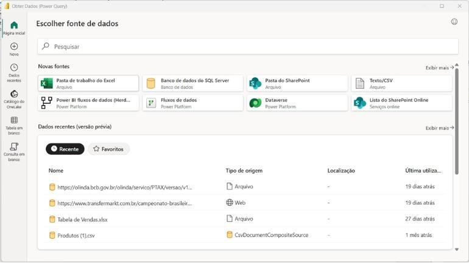
Planilha, intervalo ou tabela: qual importar?
Um arquivo do Excel pode chegar ao Power BI de três jeitos:
| Opção | Como aparece no Navegador | Problema |
|---|---|---|
| Planilha inteira | Nome da aba (ex.: CURSOS) | Importa tudo o que estiver na aba, até anotações soltas. Os dados precisam começar em A1. |
| Intervalo nomeado | Nome do intervalo (ex.: R_CURSOS) | Se entrarem linhas abaixo do fim do intervalo, elas ficam de fora. |
| Tabela do Excel | Nome da tabela (ex.: T_CURSOS) | Nenhum: a tabela cresce sozinha quando você inclui linhas. |
Sempre que puder, transforme os dados em Tabela no Excel (Ctrl+Alt+T) e dê um nome que comece com T_. É a importação mais segura.
Conhecendo a base 01 BD CURSOS
A planilha registra cursos vendidos a clientes, ministrados por professores e vendidos por comerciais. Cada linha é um curso:
| Coluna | Significado |
|---|---|
| CÓD CURSO | Código do curso vendido |
| CURSO | Matéria (Word, Excel, Access…) |
| DURAÇÃO | Duração em horas |
| CLIENTE / IMPORTE CLIENTE | Quem comprou e quanto pagou |
| PROFESSOR / IMPORTE PROFESSOR | Quem ministrou e quanto recebeu |
| DATA DO CURSO | Data de término |
| TURNO DO CURSO | Manhã, Tarde ou Noite |
| COMERCIAL / IMPORTE COMERCIAL | Vendedor e comissão |
| PAGAMENTO CLIENTE / PAGAMENTO COMERCIAL | Se o cliente pagou / se a comissão foi paga |
| PAÍS / CIDADE | Onde o curso aconteceu |
Com o relatório em branco aberto, vá em Página Inicial → Pasta de trabalho do Excel (ou clique em Importar dados do Excel no meio da tela).
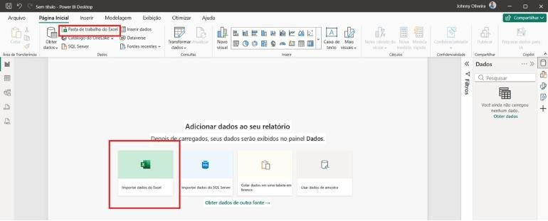
Navegue até a pasta onde você salvou 01 BD CURSOS.xlsx, selecione o arquivo e clique em Abrir.
Crie uma pasta fixa para o curso, por exemplo Documentos\Curso Power BI, e guarde todas as bases ali. O Power BI lembra o caminho do arquivo; se você mover o arquivo de lugar, a atualização quebra (aula 3).
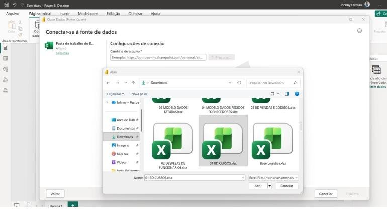
O Navegador lista tudo o que existe no arquivo: a tabela T_CURSOS, a planilha CURSOS e o intervalo R_CURSOS.
Marque T_CURSOS, confira a prévia à direita e clique em Carregar.
Nesta primeira aula usamos Carregar porque a tabela já está limpa. A partir da aula 2 você vai usar Transformar Dados para tratar os dados antes de carregar.
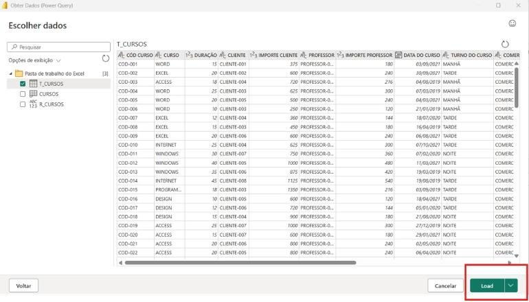
A tabela aparece no painel Dados. Clique na setinha ao lado do nome para ver os campos, listados em ordem alfabética.
Repare no símbolo Σ ao lado de DURAÇÃO e dos IMPORTES: o Power BI reconheceu que são números e vai somá-los automaticamente nos gráficos. DATA DO CURSO ganhou um ícone de calendário.
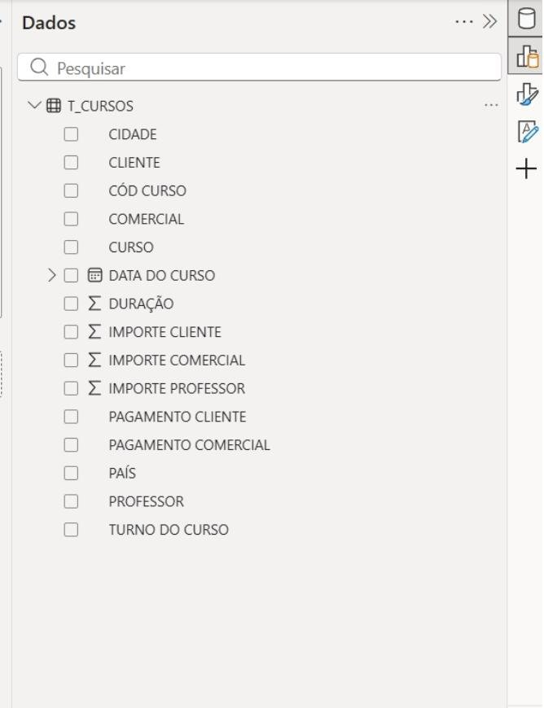
Clique no ícone Tabela na barra da esquerda. Os dados aparecem na mesma ordem do Excel. Use essa exibição para conferir se a importação veio completa: o rodapé mostra quantas linhas a tabela tem.
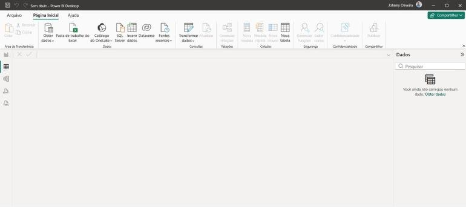
05Atualizar e salvar o arquivo
Se alguém incluir ou alterar dados em 01 BD CURSOS.xlsx, o Power BI só mostra a mudança depois que você clicar em Página Inicial → Atualizar. A aula 3 é inteira sobre isso.
Vá em Arquivo → Salvar como → Procurar este dispositivo, escolha a pasta do curso e salve como BD CURSOS. A extensão do arquivo do Power BI é .pbix.
O .pbix guarda uma cópia dos dados e as consultas, mas não o arquivo Excel. Se você enviar o .pbix para outra pessoa, ela vê o relatório, mas para atualizar vai precisar do Excel no mesmo caminho.
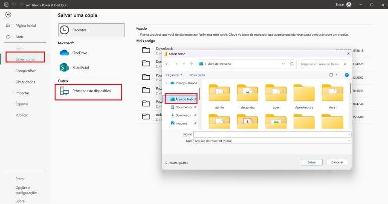
06Sua primeira análise
Já dá para responder perguntas reais com dois cliques.
- Volte para a exibição Relatório.
- No painel Dados, marque
CURSOe depoisIMPORTE CLIENTE. - O Power BI cria uma tabela. Com ela selecionada, clique no ícone Gráfico de barras clusterizado no painel Compilar.
- Clique nos três pontinhos do visual → Classificar eixo → Soma de IMPORTE CLIENTE → Decrescente.
Ela mostra quais cursos trazem mais dinheiro. Um gestor usa esse gráfico para decidir em quais cursos investir em divulgação ou em novos professores.
Clique em um espaço vazio da tela, escolha o visual Gráfico de rosca e arraste TURNO DO CURSO para Legenda e CÓD CURSO para Valores (ele vira “Contagem de CÓD CURSO”).
Agora clique em uma fatia, por exemplo NOITE: o gráfico de barras filtra junto. Isso é a interação entre visuais, uma das grandes forças do Power BI.
07Atividades
Faça com a base 01 BD CURSOS e salve tudo no mesmo arquivo.
A1 · Quem mais vendeu?
BásicoCrie um gráfico de colunas com COMERCIAL no eixo e IMPORTE CLIENTE nos valores. Qual comercial vendeu mais? Escreva a resposta numa caixa de texto (Inserir → Caixa de texto).
A2 · Cursos por país
BásicoCrie um gráfico de pizza com a quantidade de cursos por PAÍS. Qual país concentra a maioria dos cursos?
A3 · Quanto falta receber?
IntermediárioCrie um cartão com a soma de IMPORTE CLIENTE e use o painel Filtros para mostrar só os cursos com PAGAMENTO CLIENTE = NÃO. Esse é o valor a receber.
Dica
Arraste PAGAMENTO CLIENTE para “Filtros neste visual” e marque apenas NÃO.
A4 · Organize a página
IntermediárioRenomeie a página para Visão Geral, crie uma segunda página Professores com o total de IMPORTE PROFESSOR por PROFESSOR, e salve o arquivo.
A5 · Pesquisa
DesafioPesquise e escreva, com suas palavras, um exemplo de empresa da sua cidade que poderia usar BI. Que pergunta ela responderia? Que dados precisaria?
08Resumo da aula
- BI transforma dados em informação para decidir melhor; olha principalmente para o passado.
- Big Data é o volume e a variedade dos dados; Data Science usa estatística e IA para prever.
- O Power BI conecta, transforma (Power Query), modela (DAX), visualiza e compartilha.
- Prefira importar Tabelas do Excel em vez de planilhas ou intervalos.
- O .pbix não altera o Excel; para ver dados novos, use Atualizar.